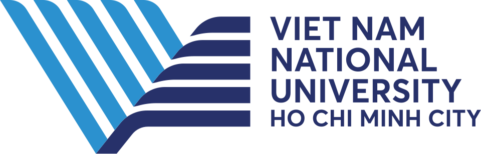

Grounded control
I study how robots may learn and use information about objects, their relationships, and their history to guide manipulation. SlotVLA focuses on object relations; LIBERO-Mem looks at what a robot needs to remember across a task.
I'm a PhD student at National University of Singapore and a graduate researcher at A*STAR Singapore . I work with Prof. Ivor Tsang, Prof. Jin-Song Dong, and Prof. Qing Guo in making robots safer whenever they share space with humans, particularly through learning semantic-action representations and stress-testing.
| Feb 2026 |
Paper accepted
LIBERO-Mem @ AAAI 2026 studies whether a robot can remember earlier object interactions across a long manipulation task. It introduces an object-centric benchmark and a slot-based model for tracking that history.
|
|---|---|
| Jan 2026 |
Paper accepted
SlotVLA @ ICRA 2026 studies how compact object and relation representations support robot manipulation. It introduces the object-annotated LIBERO+ benchmark and a slot-based model that uses fewer visual tokens while maintaining competitive generalization.
|
| Jan 2026 |
Paper accepted
UNO @ WACV 2026 unifies box- and pixel-level video scene graph generation in one model. Its object and relation slots capture interactions across frames without a separate tracker.
|
| Aug 2025 |
Started my PhD at NUS School of Computing and joined A*STAR's CFAR as a graduate researcher.
|
| Jul 2025 |
Paper accepted
BiMa @ ACM Multimedia 2025 tackles bias in text-video retrieval. It uses scene elements and disentangled text features to focus on relevant content, improving retrieval on out-of-distribution videos.
|
I earned my B.Eng. and M.Eng. at International University, Vietnam National University HCMC, where I graduated top of my class. I worked with Dr. Tuan-Anh Vu on competitive programming and computer vision.
Before starting my PhD, I was an AI Resident at FPT Software. There, I worked with Prof. Ngan Le, Prof. Tung Kieu, and Prof. Anh Nguyen on robotics and multimodal systems.
My work has followed three related questions:
I study how robots may learn and use information about objects, their relationships, and their history to guide manipulation. SlotVLA focuses on object relations; LIBERO-Mem looks at what a robot needs to remember across a task.
I test how vision and robot models behave when scenes are cluttered, ambiguous, or deliberately altered. OBEYED-VLA studies object and geometry grounding; DepthVanish, MAGIC, and work on typographic attacks probe failures in perception and reasoning.
My earlier work covers camouflaged object segmentation, robust background subtraction, and video scene graphs. These projects shaped my interest in the visual information robots rely on.
I'm now bringing those threads together to study when a robot should trust what it sees and remembers before it acts around people.
